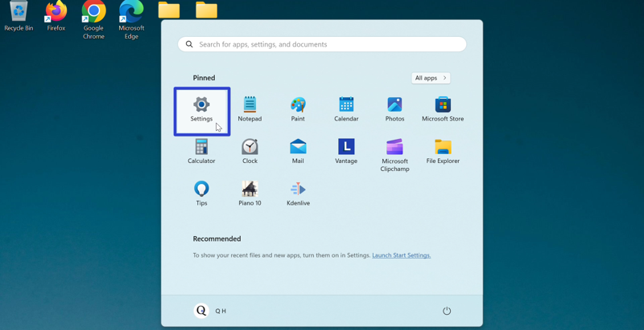

How to Install Live Home 3D - House Design on Windows 11
This tutorial covers:
- What is Live Home 3D - House Design
- How to Install Live Home 3D - House Design With Google Chrome
- How to Install Live Home 3D - House Design From Microsoft Store
- How to Open Live Home 3D - House Design With Search
- How to Pin Live Home 3D - House Design to the Taskbar With Search
- How to Pin Live Home 3D - House Design to the Taskbar With Right Click
- How to Pin Live Home 3D - House Design to the Taskbar From Start
- How to Pin Live Home 3D - House Design to Start
- How to Uninstall Live Home 3D - House Design
- How to Pin GIMP to the Taskbar With Search
- How to Pin GIMP to the Taskbar With Right Click
- How to Pin GIMP to the Taskbar From Start
No time to scroll down? Click through this tutorial slideshow:
Follow along this video tutorial:
What is Live Home 3D - House Design?
As a free home design app, Live Home 3D - House Design creates 3D models of buildings, indoor rooms, and furniture. The paid version of the app includes exclusive features, such as 3D models of outdoor terrain. Live Home 3D - House Design includes cameras and video recording that provide a “virtual tour” of the house floor plan.
How to Install Live Home 3D - House Design With Google Chrome
- Step 1: Double click the Google Chrome shortcut to open the Google Chrome browser.

- Step 2: In the browser window that opens, go to a search engine website. For example, click the top address bar, type “google.com”, and press Enter.

- Step 3: On the search engine website, click the search bar, type “Live Home 3D - House Design”, and press Enter.

- Step 4: In the search results, click the “https://www.livehome3d.com” result.

- Step 5: On the official Live Home 3D website, go to the upper right and click the Windows logo.

- Step 6: Click the “Get it from Microsoft” button.
- Step 7: If the message “Open Microsoft Store?” appears, click the “Open Microsoft Store” button.
- Step 8: In the Microsoft Store window that opens, click the “Get” button.
- Step 9: After the app installs, click the “Open” button.

- After loading, the Live Home 3D - House Design app opens.
How to Download Live Home 3D - House Design From Microsoft Store
- Step 1: Go down to the taskbar and click the Start (four blue squares) button.

- Step 2: In the Start window that opens, click the top search bar and type “Microsoft Store”.

- Step 3: Step 3: On the search results screen, click one of these buttons.

- Step 4: In the Microsoft Store window that opens, click the top search bar, type “Live Home 3D - House Design”, and press Enter.
- Step 5: On the search results screen, click the “Live Home 3D - House Design” result.
- Step 6: Click the “Get” button.
- Step 7: After the app installs, click the “Open” button.
- After loading, the Live Home 3D - House Design app opens.
How to Open Live Home 3D - House Design With Search
- Step 1: Go down to the taskbar and click the Start (four blue squares) button.
- Step 2: In the Start window that opens, click the top search bar and type “Live Home 3D - House Design”.
- Step 3: On the search results screen, click one of these buttons.

- After loading, the Live Home 3D - House Design app opens.
How to Pin Live Home 3D - House Design to the Taskbar With Search
- Step 1: Go down to the taskbar and click the Start (four blue squares) button.
- Step 2: In the Start window that opens, click the top search bar and type “Live Home 3D - House Design”.
- Step 3: On the search results screen, click “Pin to taskbar”.
- Step 4: Go down to the taskbar and click the pinned Live Home 3D - House Design app icon.

- After loading, the Live Home 3D - House Design app opens.
How to Pin Live Home 3D - House Design to the Taskbar With Right Click
- Step 1: First open Live Home 3D - House Design. Go down to the taskbar and right click the app icon.

- Step 2: In the menu that opens, click “Pin to taskbar”.

How to Pin Live Home 3D - House Design to the Taskbar From Start
- Step 1: Go down to the taskbar and click the Start (four blue squares) button.
- Step 2: In the Start window that opens, right click the pinned Live Home 3D app icon. If Live Home 3D is not already pinned to Start, please see How to Pin Live Home 3D - House Design to Start.

- Step 3: In the menu that opens, click “Pin to taskbar”.

- Step 4: Go down to the taskbar and right click the pinned Live Home 3D app icon.
- Step 5: In the menu that opens, click “Live Home 3D”.

- After loading, the Live Home 3D - House Design app opens.
How to Pin Live Home 3D - House Design to Start
- Step 1: Go down to the taskbar and click the Start (four blue squares) button.
- Step 2: In the Start window that opens, click the top search bar and type “Live Home 3D - House Design”.
- Step 3: On the search results screen, click “Pin to Start”.
- Step 4: Click the Start button twice, and in the Start window that opens, click the pinned Live Home 3D app icon.

- After loading, the Live Home 3D - House Design app opens.
How to Uninstall Live Home 3D - House Design
- Step 1: Go down to the taskbar and click the Start (four blue squares) button.
- Step 2: In the Start window that opens, click the “Settings” button. 
- Step 3: In the Settings window that opens, go to the left menu and click “Apps”.

- Step 4: Click “Installed apps”.

- Step 5: In the Settings window, click the top search bar and type “Live Home 3D - House Design”.

- Step 6: On the far right side of the “Live Home 3D” section, click the “Menu” or “…” button.
- Step 7: In the menu that opens, click “Uninstall”.
- Step 8: In the window that opens, click “Uninstall”.

Refer to these instructions later with this free tutorial PDF.